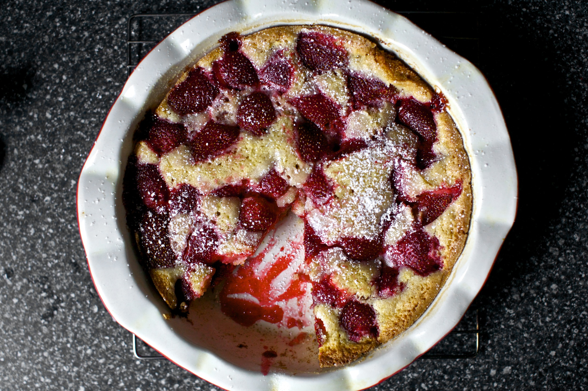

Strawberry Summer Cake

A cake that's as pretty as it is tasty.
This is a delicious, easy to make cake that's great for using up strawberries on their last legs. The edges of the vanilla cake crisp up, while the strawberries on top turn
jammy - it's redonkulously good. I find this cake tastes best after it's cooled completely- the strawberries in particular, taste better cool than they do warm- but that's just my preference.
Can be served by itself, or with a dollop of whipped cream.
Ingredients
- 85g unsalted butter, at room temperature
- 190g all-purpose flour
- 1 1/2 tsp baking powder
- 1/2 tsp salt
- 170g sugar, plus two tbsp for topping
- 1 egg
- 120ml milk
- 1 tsp vanilla
- 400g strawberries
Instructions
- Preheat the oven to 180°. Butter a 25cm cake tin.
- Whisk flour, baking powder and salt together in a small bowl.
- In another bowl, using an electric mixer, beat the butter and sugar together until pale and fluffy. Add the egg, milk and vanilla and mix until combined.
- Mix in dry ingredients gradually, gently folding until the batter is just smooth.
- Pour batter into prepared cake tin, and arrange thr strawberries on top. Don't press them under the batter, allow them to rest on top. Sprinkle the remaining 2 tbsp of sugar over berries.
- Bake cake for 10 minutes and then reduce the oven temperature to 160°. Bake the cake until golden brown, and a toothpick comes back free of wet batter, or about 50-60 minutes.
- Let cake cool in the pan, then enjoy!